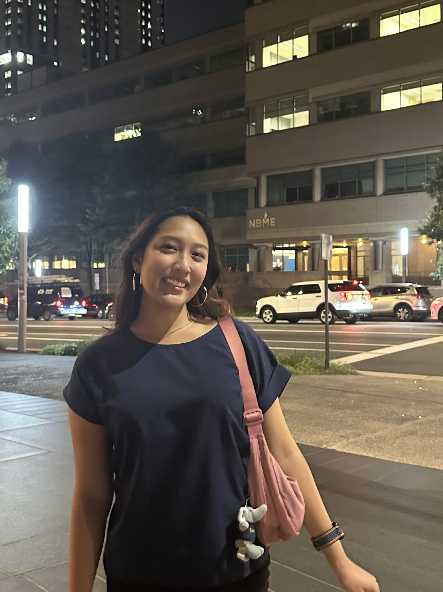
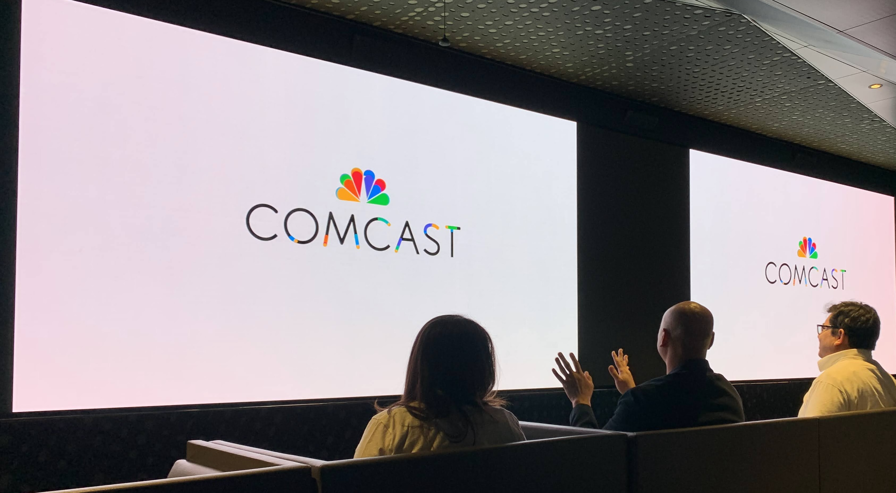

LinkedIn Redesign
A 10-week solo redesign of LinkedIn's "Connect" microinteraction, transforming a static button into an engaging, accessible experience!
explore my design projects and professional experiences
A 10-week solo redesign of LinkedIn's "Connect" microinteraction, transforming a static button into an engaging, accessible experience!

A semester-long project exploring modern web design principles through hands-on development, responsive design, and user-focused functionality with real recipes!

A collaborative 10-week project transforming a food truck brand into a fully functional, mobile-responsive web app with interactive animations and accessible user experiences.

Led website accessibility remediation using WAG guidelines and Axe DevTools, improving digital experiences for all users!

Developed and managed web content using WordPress, creating digital assets and multimedia content for public outreach campaigns!

Conducted research to support DEl initiatives, fostering inclusive workplace culture and tracking key diversity metrics!